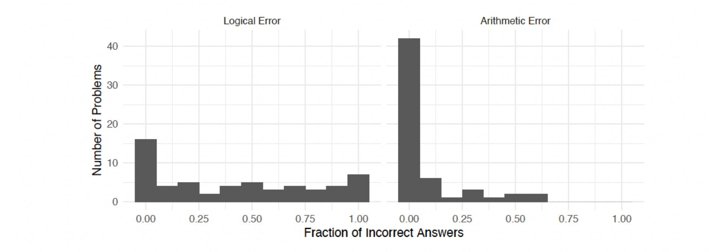
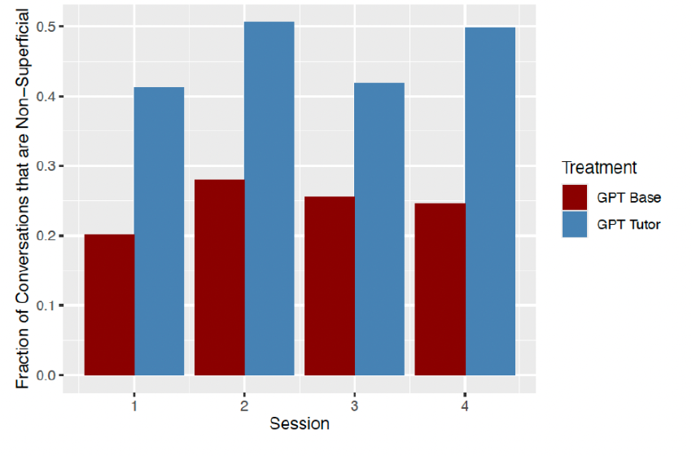

Live sim
Design a creature
Give prey a defense, give predators an answer, and watch an arms race evolve.
The Desk by MindCraft
The M in MindCraft is for “making education fun again.” Meet our remarkably slow AI and our remarkable tutors and students, then collaborate and build.


Source: Bastani, Bastani, Sungu, Ge, Kabakcı & Mariman, Generative AI Without Guardrails Can Harm Learning: Evidence from High School Mathematics, University of Pennsylvania (Wharton).
Reading real prerequisite edges out of the concept library.
Not software that guesses. A person who notices when you're stuck.
One-on-one time. Live events. A tutor who notices when you are stuck, and says so.
Give prey a defense, give predators an answer, and watch an arms race evolve.
Stack harmonics until a plain wave turns into a sound with real character.
Play detective against your own brain and catch the biases planting false clues.
Free right now, a few seats each round. Tell us who you are and we will get back to you personally.
The whole library, 4118 concepts across 13 subjects, with 3746 written chapters and 722 built simulations.
Search that knows where a concept sits, so you get the ramp into it, not just the page.
Jesse, the voice tutor, and a desk that tracks what actually stuck instead of assigning homework.
A minute of typing. No card, no trial timer.